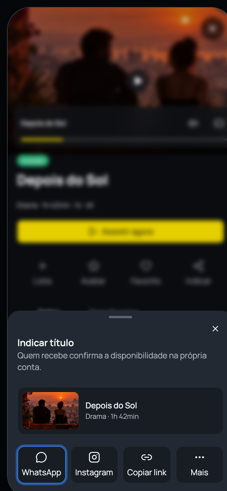
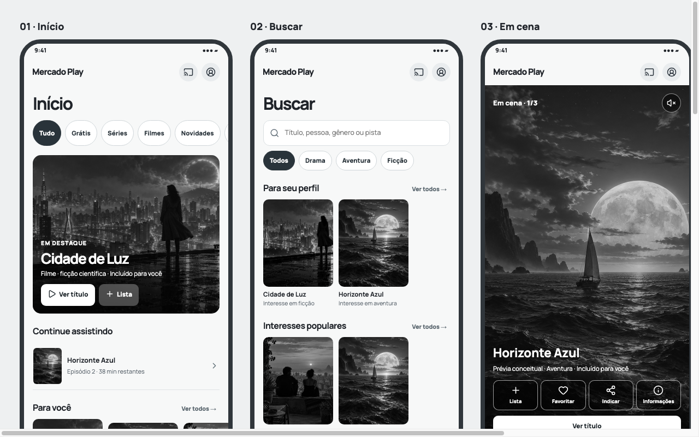

Encontrar
Recuperar uma sugestão mesmo com poucas pistas.
Nagela Carvalho · Desafio de Product Design · 22 de setembro de 2026
O desafio era melhorar recomendações de conteúdo entre amigos e familiares. Desenhei uma experiência para encontrar, indicar e retomar títulos sugeridos por pessoas próximas, conectando descoberta, listas e acesso no mesmo percurso.
O briefing pedia melhorar recomendações de conteúdo entre amigos e familiares. A queda de 4% na frequência de uso dava contexto ao desafio, sem explicar sua causa. Os relatos mostravam indicações anotadas no WhatsApp, confiança maior em pessoas conhecidas, desejo de ver destaques da família e dificuldade para recuperar um título lembrado pela metade.
Minha proposta liga esses momentos: descobrir ou recuperar um título, indicá-lo com contexto, guardá-lo em uma lista pessoal ou compartilhada e entender como assistir. Curadoria e prévias ajudam a escolher o que vale indicar; a recomendação continua sendo o fio da experiência.
Recuperar uma sugestão mesmo com poucas pistas.
Compartilhar com contexto e decidir com pessoas próximas.
Guardar, reconhecer a origem e chegar ao título depois.
Nas falas fornecidas no briefing, Carla anota indicações no WhatsApp, Andrés procura no Google quando falta o nome, Virginia confia mais em pessoas conhecidas e Roberto quer ver destaques da família. Revisei as telas de descoberta, busca e detalhe para entender onde a experiência poderia ligar essas situações.
Origem dos achados: quatro relatos de usuários fornecidos pelo desafio e análise heurística das telas feita por mim. Não conduzi entrevistas nem teste com participantes neste case.


Carla guarda títulos fora do app; Andrés precisa reconstruir uma sugestão quando não lembra o nome.
Virginia valoriza a opinião de conhecidos; Roberto procura um espaço para os destaques da família.
Na minha análise das telas, modalidade e próximo passo precisavam aparecer antes do compromisso.
Uma indicação deve continuar recuperável quando a conversa passou ou o nome do título foi esquecido. Isso orientou busca por pistas, favoritos e listas.
A origem da sugestão importa. Indicação rápida e listas compartilhadas aproximam a descoberta das pessoas em quem se confia.
Depois de receber um título, a pessoa precisa saber se ele está incluído ou quanto custa na própria conta antes de agir.
Rastreabilidade: os dois primeiros contextos vêm dos relatos fornecidos no desafio; o terceiro vem da minha análise das telas. Eles ainda precisam de validação no protótipo.
Comecei pela ideia de facilitar o envio de um título. Ao mapear o caminho até esse gesto, percebi que indicar também exige encontrar algo confiável e que receber exige conseguir recuperar e acessar o título. Ampliei o fluxo sem perder o foco do desafio: a recomendação entre pessoas próximas.
O fluxo começava quando alguém já sabia o que indicar.
Encontrar, indicar, receber e retomar formam uma experiência contínua.


Usei a árvore para evitar que a solução virasse uma coleção de telas. Para cada oportunidade, registrei a hipótese, a resposta de interface e o comportamento que precisaria observar em uma avaliação futura.
Abrir árvore detalhadaGate: encontrar uma opção acionável e entender por que ela apareceu.
Gate: agir e reencontrar sem confundir favorito, avaliação e lista.
Gate: explicar modalidade, preço, prazo e próximo passo.
A pessoa pode começar por uma sugestão recebida ou por um título que deseja indicar. Estes momentos organizam as necessidades e respostas da interface, sem impor um único caminho.
No Figma, revisei as telas e desenhei as conexões do fluxo em baixa fidelidade. Isso ajudou a enxergar retornos, sobreposição de sheets e momentos que pediam outro nível de navegação. O desenho também orientou os estados e componentes necessários no Design System.
Telas, menus, popovers, sheets, loading, vazios e caminhos de volta.
O que cada ação comunica, qual hipótese sustenta e qual evidência falta.
Componentes e variantes necessários para evitar soluções isoladas na alta.
Registrar achados por tela e hipótese, voltando ao fluxo antes de polir.
Mantive quatro destinos na navegação principal: Início, Loja, Em cena e Buscar. O detalhe reúne informação e indicação do título; Minha área permite reencontrar sugestões e organizar decisões com outras pessoas. Assim, a recomendação atravessa o produto sem depender de uma tela isolada.
Continuidade, interesses, novidades e rankings aparecem em trilhos distintos.
Vídeos curtos em tela cheia ajudam a formar confiança e agir sem perder o título.
Mídia, descrição, acesso e ações distintas ajudam a escolher e compartilhar o título.
Favoritos são rápidos; listas organizam intenção e podem receber participantes.
O protótipo explora estados de acesso e preço como cenário complementar ao conteúdo gratuito.
Skeleton, transições, toasts e estados selecionados reduzem dúvida durante a ação.
Prototipei a descoberta por pista ou prévia, a indicação de um título e a retomada em favoritos ou listas compartilhadas. Os fluxos permitem observar como alguém reconhece uma sugestão, escolhe e recomenda a outra pessoa. Catálogo e transações são simulados.
Abrir em tela cheiaOrganizei tokens e componentes no Figma antes de aprofundar as telas. No código, customizei a base shadcn para manter a mesma tipografia, cores, espaços, raios e estados. Isso tornou mais fácil corrigir um padrão na origem e reaplicá-lo no protótipo.
Abrir documentação do DSO protótipo consome componentes reutilizáveis, variantes e tokens CSS. A documentação do DS é uma rota separada para permitir inspeção sem misturá-la à experiência do produto.
Transformei o briefing em hipóteses e critérios concretos antes de pedir variações à IA. Em cada iteração, apontei o problema, a referência no wireflow e o componente do sistema que deveria resolvê-lo. Quando a interface se afastava dessa base, revisei o padrão no DS e voltei ao fluxo.
A IA me ajudou a explorar alternativas e implementar mais rápido. Meu trabalho foi escolher o recorte, avaliar o que fazia sentido para a jornada, ajustar o Figma e conferir a consistência entre design e código.
Dores, jobs, riscos e critérios observáveis em vez de pedidos soltos de tela.
Caminhos, decisões, estados, overlays e retornos formaram o escopo navegável.
Style guide dark, tokens, Auto Layout, componentes, variantes e composições.
shadcn, Radix e Motion foram customizados pelo mesmo vocabulário do Figma.
Heurísticas e achados voltaram para hipóteses, wireflow, DS e interface.
Organizei o projeto no GitHub, com o case, a documentação do Design System e o protótipo navegável no mesmo repositório. A versão publicada na Vercel permite percorrer os fluxos sem abrir arquivos locais; o histórico de commits registra como a solução mudou ao longo das iterações.
O entregável no Figma reúne o mapa da jornada, o Style Guide com tokens e componentes vinculados e uma página própria para o fluxo em alta fidelidade.
Percorri o wireflow e, nas iterações com IA, organizei os atritos por tela e hipótese no registro de iterações. Voltei ao protótipo para ajustar comportamento e linguagem visual: hierarquia, ritmo, estados e componentes do Design System. Esta é minha revisão; observar pessoas nas tarefas é o próximo passo.
Uma recomendação útil precisa ser confiável para quem recebe, fácil de reencontrar e clara sobre o próximo passo. O protótipo conecta essas condições; a avaliação com participantes dirá se elas funcionam na prática.
O próximo ciclo deve testar tarefas e critérios definidos na árvore, registrar desvios por tela e separar observação de interpretação.